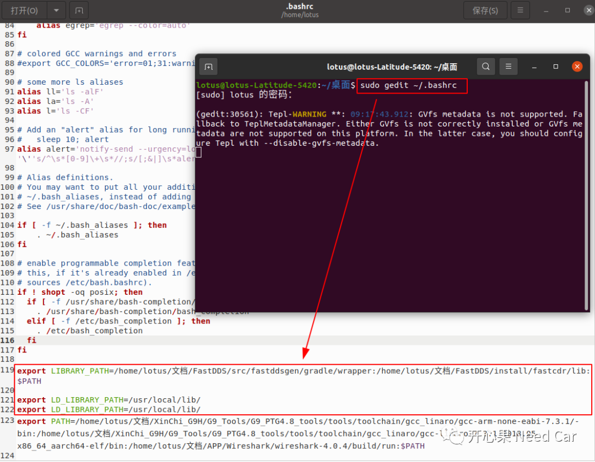
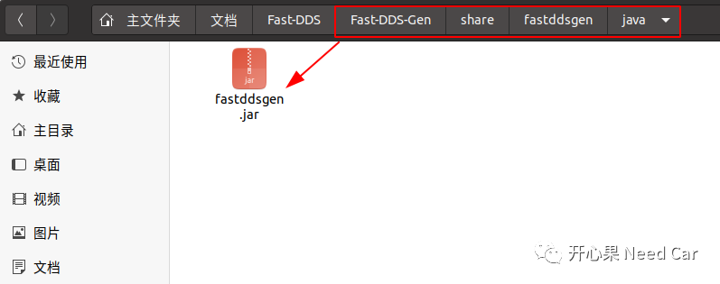
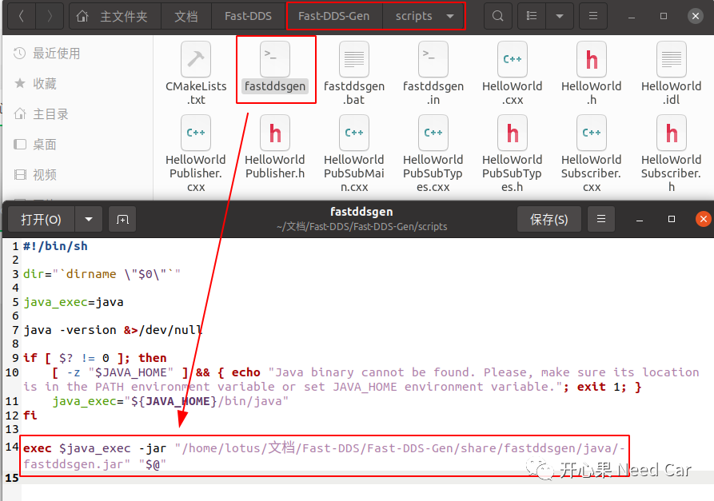

开心果 Need Car · 2023-03-22T17:02:00+08:00 · 微信原文
1、本地方式安装
mkdir Fast-DDScd Fast-DDSgit clone https://github.com/eProsima/foonathan_memory_vendor.gitmkdir foonathan_memory_vendor/buildcd foonathan_memory_vendor/buildcmake .. -DCMAKE_INSTALL_PREFIX=/usr/local/ -DBUILD_SHARED_LIBS=ONsudo cmake --build . --target install
CMAKE_INSTALL_PREFIX是cmake内置变量，用于指定cmake 执行install目标时，安装的路径前缀。本文直接安装到系统文件夹/usr/local/下，操作系统文件时，如果需要用户权限，使用sudo命令执行。
cd Fast-DDSgit clone https://github.com/eProsima/Fast-CDR.gitmkdir Fast-CDR/buildcd Fast-CDR/buildcmake .. -DCMAKE_INSTALL_PREFIX=/usr/local/sudo cmake --build . --target install
cd Fast-DDSgit clone https://github.com/eProsima/Fast-DDS.gitmkdir Fast-DDS/buildcd Fast-DDS/buildcmake .. -DCMAKE_INSTALL_PREFIX=/usr/local/ -DBUILD_SHARED_LIBS=ONsudo cmake --build . --target install
export LD_LIBRARY_PATH=/usr/local/lib/echo 'export LD_LIBRARY_PATH=/usr/local/lib/' >> ~/.bashrc

每次添加环境变量或者库的搜索路径以后（即：修改.bashrc），使用source ~/.bashrc使设置立即生效。
2、Java JDK & Gradle安装
（一）Java JDK、Gradle安装
sudo apt install openjdk-11-jdk安装JDK 11版本是为了与jar的版本匹配，否则使用./gradlew assemble命令时，会提示Java版本出错问题。
提示：使用./gradlew assemble安装，遇到JDK版本不匹配问题时，可以参考链接：https://blog.51cto.com/u_6650004/6114605
cd Fast-DDSgit clone --recursive https://github.com/eProsima/Fast-DDS-Gen.gitcd Fast-DDS-Gengradle assemble
安装Fast-DDS-Gen是为了通过*.idl文件生成源码文件。
成功执行./gradlew assemble安装以后，会生成share/fastddsgen文件夹，且在*/Fast-DDS-Gen/share/fastddsgen/java路径下生成fastddsgen.jar文件，如下所示：

通过*.idl文件生成源码时，注意fastddsgen批处理文件中的fastddsgen.jar文件路径修改，否则，通过*.idl生成源文件时，会提示没有fastddsgen.jar文件，本文修改如下所示：

往期精彩回顾
Bootloader开发：刷写时，被刷节点和非刷写节点行为有何不同？
Bootloader开发：为什么需要SBL（Secondary Bootloader）?
Autosar EcuM：APP由RUN到POST_RUN浅析